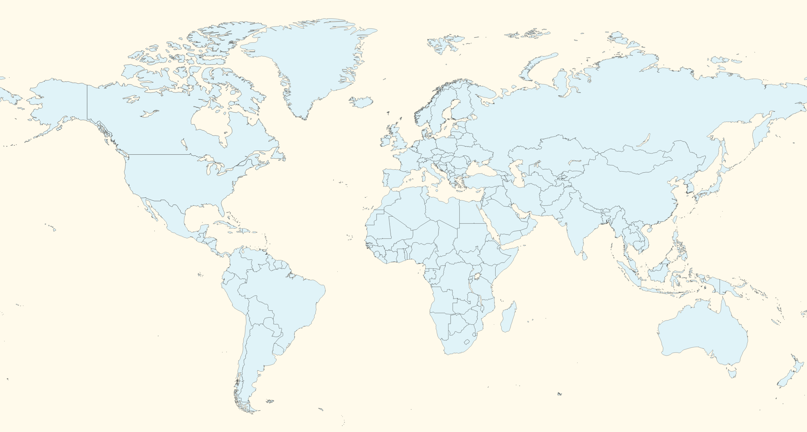

AfricaAsiaAustralia/OceaniaEuropeNorth AmericaSouth America
Click on a pin on the map, and you will be taken to a page with recipes from that continent. You can also use the filters on the continent's page to pick a recipe based on dietary and time needs. Happy cooking!